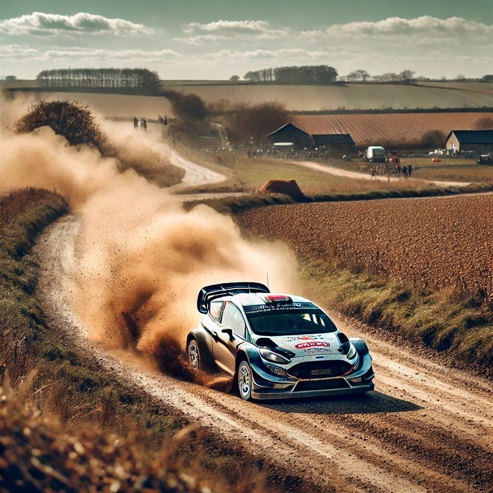
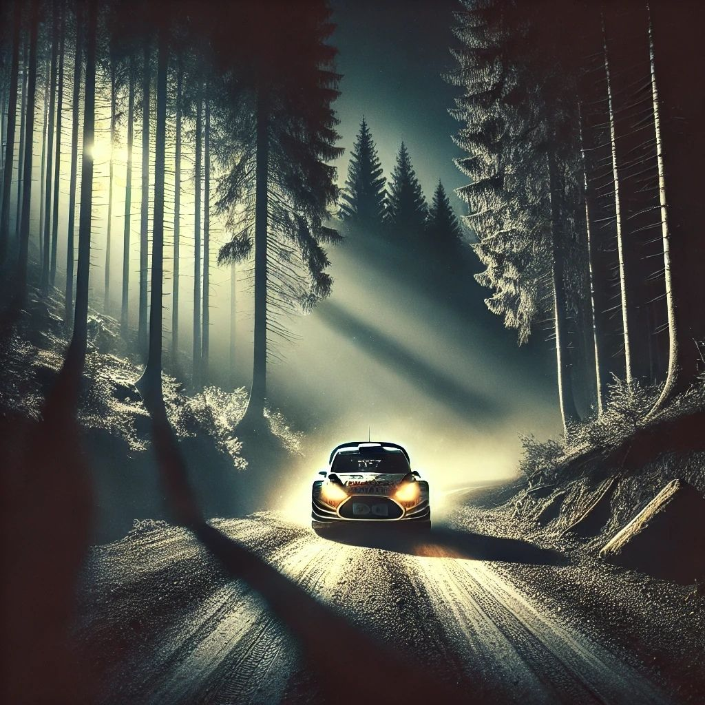
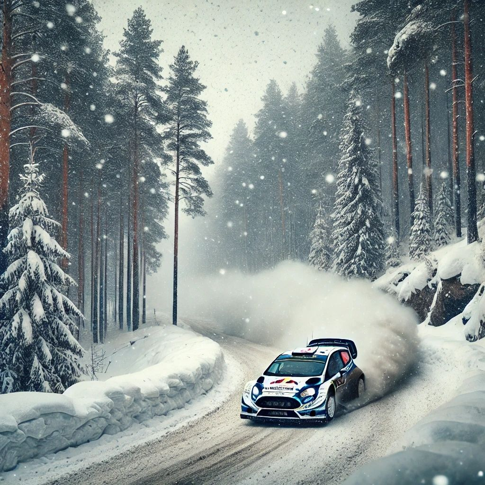
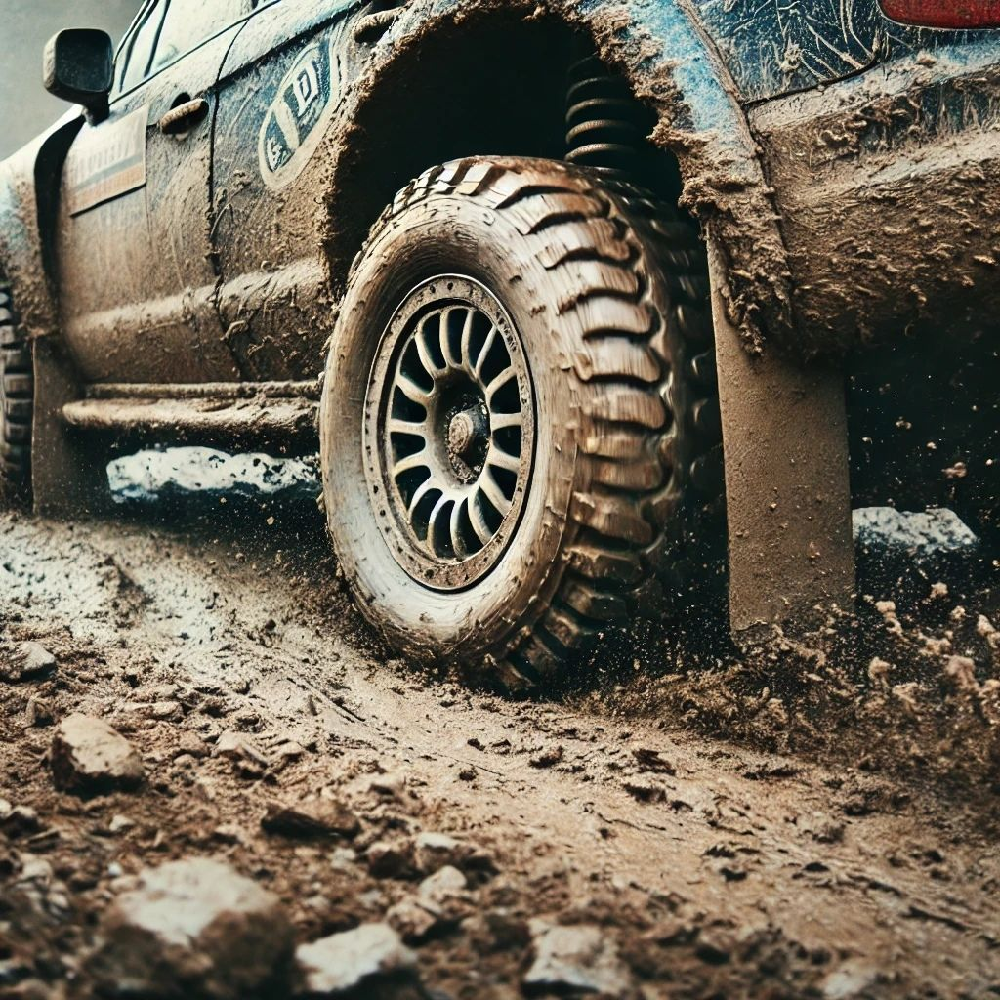

| Rally cars are a marvel of engineering, designed to endure some of the harshest and most unpredictable
conditions in motorsports.
Unlike typical race cars that are built for smooth circuits, rally cars must be equipped to handle
diverse surfaces such as gravel, dirt, snow, mud, and tarmac.
To cope with these challenging terrains, rally cars are extensively modified from their production
counterparts.
One of the key modifications is the installation of a roll cage, which provides critical protection for
the driver and co-driver in case of a rollover, which is common due to the uneven surfaces and sharp
turns encountered in rally stages.
The suspension system in rally cars is also heavily reinforced and tuned for off-road use, providing
both durability and flexibility. This allows the cars to absorb large bumps and jumps without
compromising control.
Additionally, rally cars are fitted with specialized tires designed for maximum traction on the
particular surface of a stage, whether it be snow, ice, or loose gravel.
This focus on versatility is what sets rally cars apart from other motorsports vehicles—they must be
ready to perform under a variety of conditions with minimal changes during the event.
|
The roots of rally racing can be traced back to the early 20th century, with events such as the Monte
Carlo Rally, which began in 1911, playing a pivotal role in shaping the sport.
These early rallies were not just about speed but also about endurance, with drivers navigating long,
arduous routes that took them through difficult terrain and changing weather conditions.
The concept of rallying was born out of the need to test both the cars' reliability and the drivers'
endurance over extended periods.
Fast forward to the present day, and rally racing has evolved into a highly organized and competitive
motorsport. The World Rally Championship (WRC), established in 1973, is now the pinnacle of the sport.
The WRC attracts not only the best drivers but also leading automobile manufacturers such as Toyota,
Hyundai, and Ford, who see rallying as the ultimate test of their vehicles' engineering and performance
capabilities.
The variety of stages, which span multiple continents and diverse climates, continues to make the WRC
one of the most exciting and unpredictable forms of racing.
|
What makes rally racing truly unique compared to other forms of motorsport is the use of real roads as
the race track. These roads are typically public routes that are temporarily closed for the event.
This means that drivers are not racing on purpose-built circuits but on roads that could be in remote
forests, mountains, or even urban areas.
Rally stages can vary dramatically, from short, intense sprints to long endurance stages that test the
stamina and focus of both the driver and the car.
One of the most fascinating aspects of rally racing is the constant change in conditions that drivers
must adapt to.
A single rally event could have stages on smooth tarmac, followed by rocky gravel paths, or even
snow-covered mountain roads.
The ability to quickly adapt to these changes in terrain is what separates the best drivers from the
rest.
Each stage requires careful strategy and skill, and often drivers must find the right balance between
speed and caution, as a single mistake on these unpredictable roads could end their race.
|
In rally racing, the co-driver plays a role that is just as crucial as the driver.
Unlike in other forms of motorsport where the driver follows a memorized circuit, rally drivers rely
heavily on the instructions provided by their co-drivers.
These instructions, known as "pace notes," are essentially a detailed map of the stage, highlighting
every turn, jump, dip, and surface change.
The co-driver reads these notes aloud in real-time, allowing the driver to anticipate what lies ahead,
often at high speeds.
The precision and timing of the co-driver's calls are critical, as a delayed or incorrect instruction
can result in the driver misjudging a corner or obstacle, leading to a crash or time loss.
The relationship between the driver and co-driver is one of trust and teamwork.
The driver must have complete faith in the co-driver's ability to read the course accurately and give
timely instructions, while the co-driver must remain composed and focused throughout the stage, even in
the most intense moments.
This dynamic makes rally racing a true team effort, where success relies on the synergy between the two.
|
| Rally racing is not just a test of the drivers' skill
but also of the manufacturers' engineering capabilities.
Leading car manufacturers such as Toyota, Hyundai, and Ford view rally racing as the
ultimate proving ground for their vehicles.
Rally cars are typically based on production models, but they undergo a series of
modifications that make them suitable for the extreme conditions of rallying.
These modifications include changes to the engine, suspension, brakes, and safety features,
making the car more robust and capable of handling the rough, unpredictable terrains of a
rally stage.
For manufacturers, success in rally racing translates into more than just prestige; it is
also a powerful marketing tool.
Rally racing provides an opportunity to showcase the durability, performance, and
reliability of their vehicles to a global audience.
Many of the technologies developed for rally cars, such as all-wheel drive systems and
enhanced suspensions, eventually make their way into consumer vehicles,
making rallying not only a sport but also a platform for automotive innovation.
|
Weather conditions can have a dramatic impact on rally
racing, making it one of the most unpredictable motorsports in the world.
Unlike circuit racing, where the weather conditions are relatively stable over the course of
an event, rally drivers must be prepared to face a wide range of weather challenges within a
single event.
One stage might take place in the heat of summer, while another might see the drivers
battling through snow or rain-soaked roads.
Teams prepare for these changing conditions by bringing a variety of tire types and
adjusting the car’s setup to suit the weather.
For instance, in wet conditions, teams will opt for softer tires that provide better grip on
slippery surfaces.
In snowy stages, studded tires are used to help the car maintain traction on icy roads.
The unpredictability of the weather means that drivers and teams must constantly adapt their
strategies, sometimes changing their tire choices at the last minute based on rapidly
changing forecasts.
|
Night stages are one of the most challenging and
exhilarating aspects of rally racing.
Driving at night adds an extra layer of difficulty, as visibility is reduced and the driver
must rely even more on the co-driver’s pace notes.
Rally cars are equipped with powerful spotlights mounted to the front of the vehicle, which
help to illuminate the road ahead.
However, even with these lights, the darkness can obscure hazards such as bumps, dips, and
turns, making night driving a true test of the driver’s skill and concentration.
The atmosphere during night stages is often electric, with the headlights of the rally car
cutting through the darkness, and the roar of the engine echoing through the night.
For spectators, night stages offer a thrilling experience as they watch the cars speed past
in the darkness, often with only the lights and the sound of the engines as their guide.
For drivers, these stages are all about focus and trust in their co-driver, as even a
split-second mistake can have serious consequences when driving at high speeds in near-total
darkness.
|
|
| A rally car powers through a dusty gravel road,
kicking up a huge cloud of dirt as it races through the rugged countryside at breakneck speed. |
A rally car speeds through the dark forest, its
powerful headlights cutting through the night, casting long shadows as it navigates the narrow dirt
road. |
A rally car drifts around a snowy bend in a dense,
snow-covered forest, the icy conditions adding to the excitement of this high-speed winter race. |
A close-up shot of a rally car's tire and suspension,
coated in thick mud, as it conquers the rough, rocky terrain with precision and strength. |